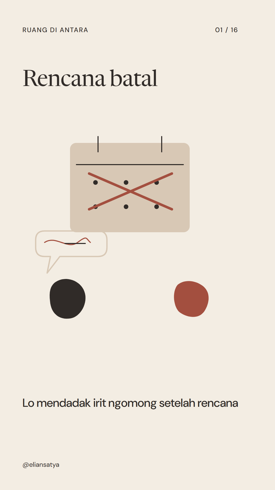
Lo mendadak irit ngomong setelah rencana kalian batal.
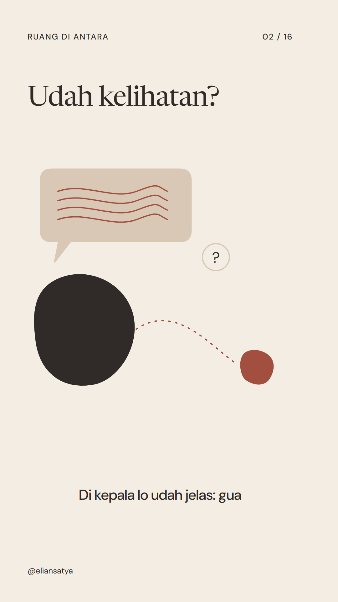
Di kepala lo udah jelas: gua kecewa. Tapi yang sampai ke dia apa?
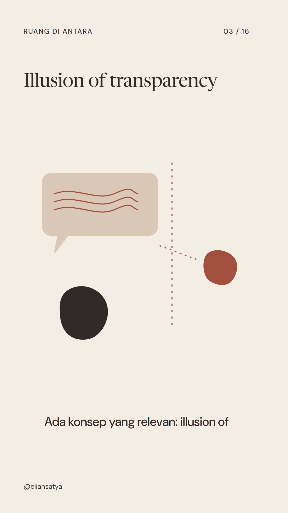
Ada konsep yang relevan: illusion of transparency, atau ilusi transparansi.
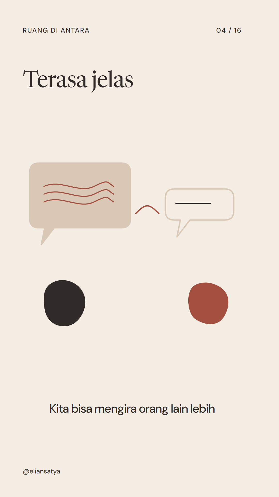
Kita bisa mengira orang lain lebih jelas membaca perasaan kita daripada yang sebenarnya.
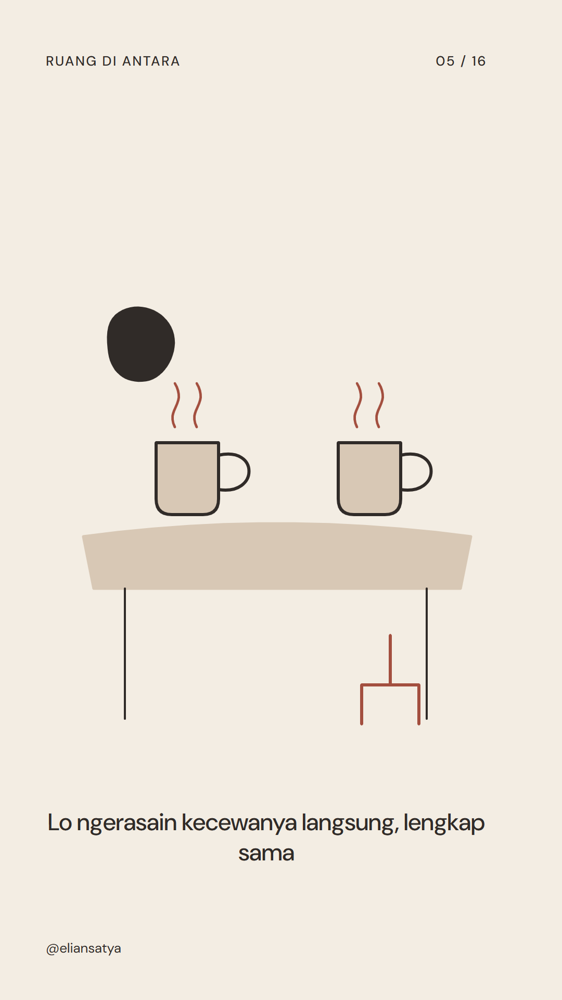
Lo ngerasain kecewanya langsung, lengkap sama harapan yang tadi lo bawa.
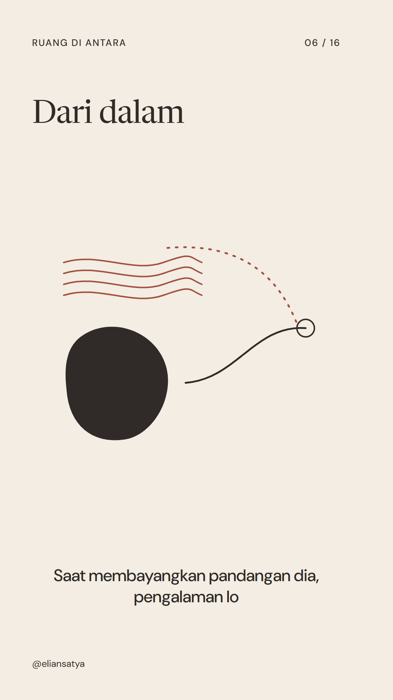
Saat membayangkan pandangan dia, pengalaman lo sendiri bisa tetap jadi patokan.
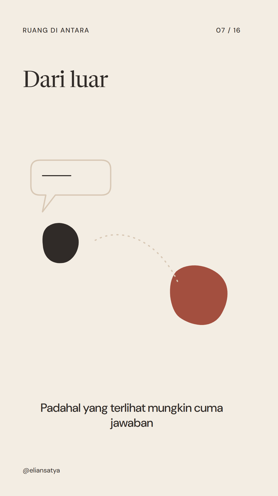
Padahal yang terlihat mungkin cuma jawaban pendek dan lo yang lebih diam.
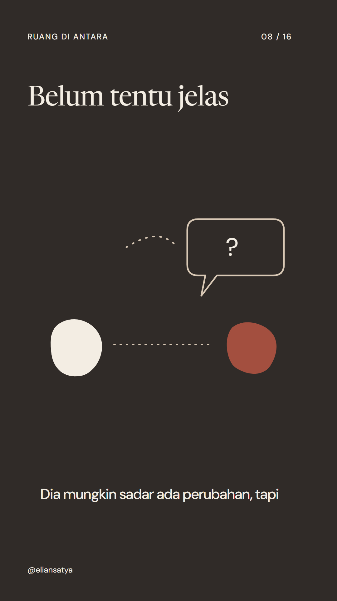
Dia mungkin sadar ada perubahan, tapi belum tahu apa yang bikin lo kecewa.
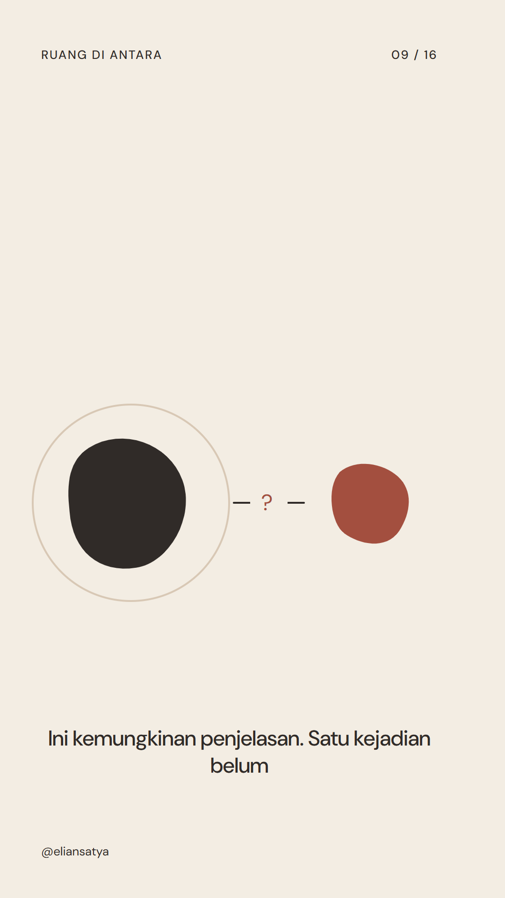
Ini kemungkinan penjelasan. Satu kejadian belum cukup buat menilai kepedulian dia.
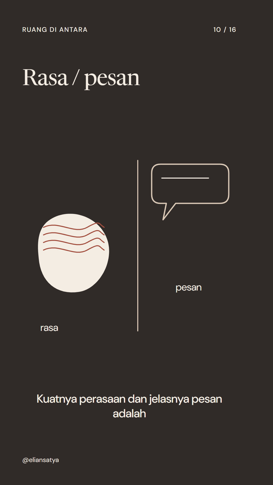
Kuatnya perasaan dan jelasnya pesan adalah dua hal yang perlu dibedakan.
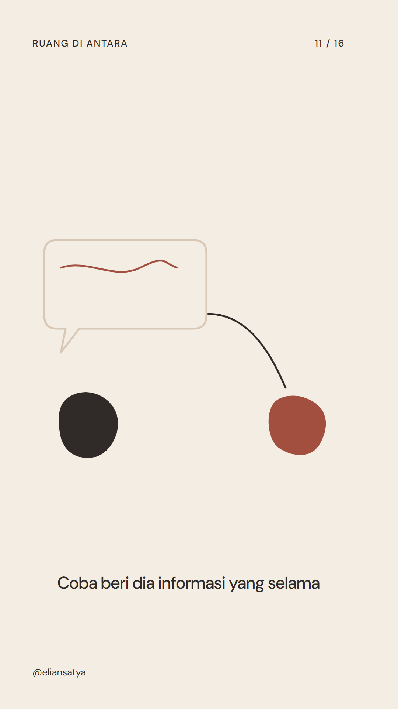
Coba beri dia informasi yang selama ini cuma ada di kepala lo.
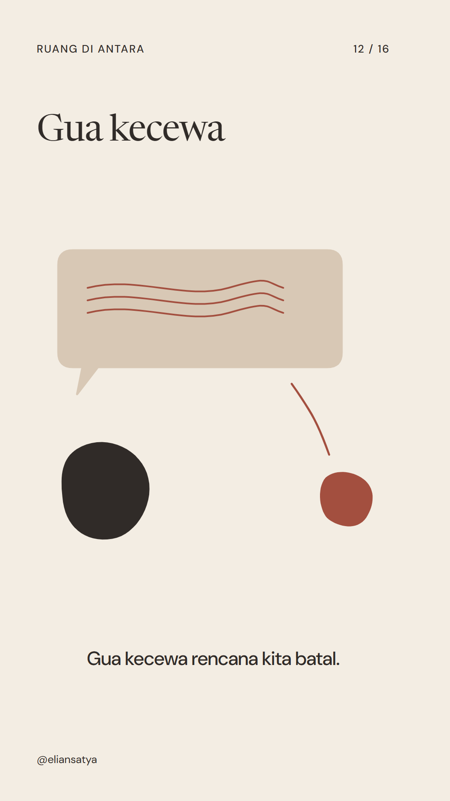
Gua kecewa rencana kita batal.
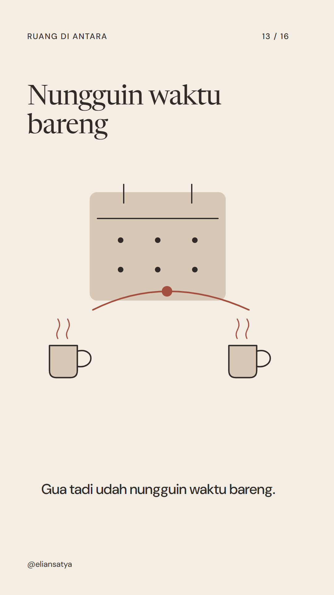
Gua tadi udah nungguin waktu bareng.
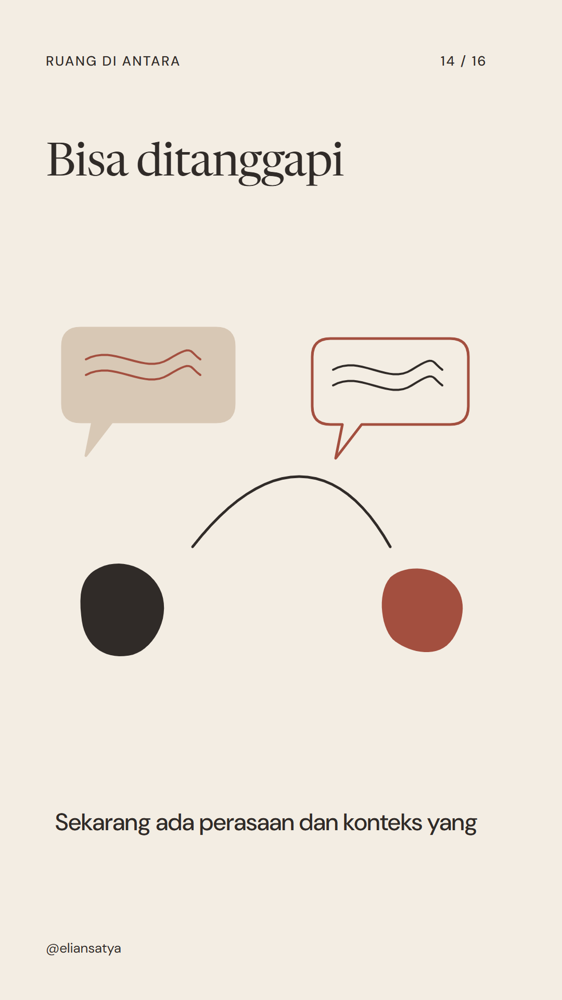
Sekarang ada perasaan dan konteks yang bisa ditanggapi. Memahami tetap butuh usaha bersama.
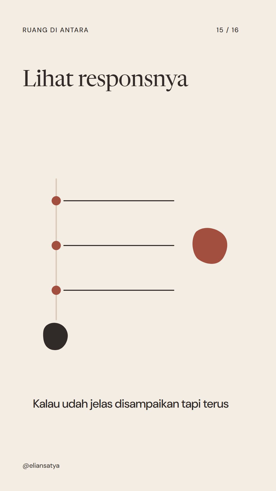
Kalau udah jelas disampaikan tapi terus diabaikan, lihat juga pola responsnya.
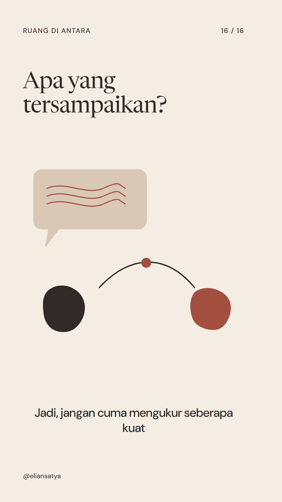
Jadi, jangan cuma mengukur seberapa kuat lo merasa. Cek juga apa yang udah lo sampaikan.